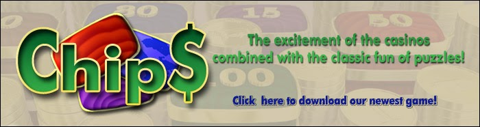

Welcome to Cookie Chef! As the assistant of our world famous Chef Ben, the Baker, you must work hard to help him prepare cookies quickly and efficiently. If successful, Ben will certainly promote you to higher positions in his bakery and, by keeping up the good work, you will be a serious candidate to reach the rank of Cookie Chef!
You can choose among three different game modes: Switch Cookies and Bake Cookies (strategy modes) and Find Cookies (action mode). The game also comes with tasteful cookie recipes. Check it out!
Look at the features that make Cookie Chef a great entertainment option for the whole family!